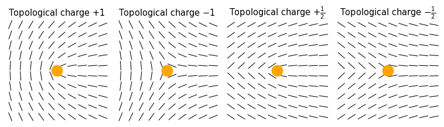
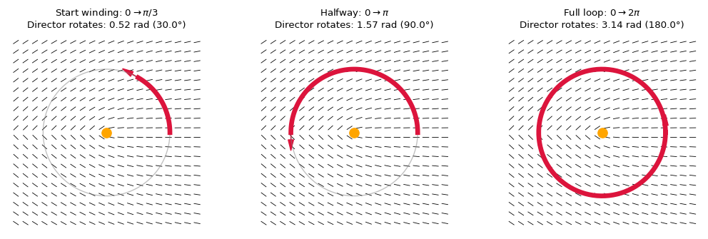

16 Liquid crystals
Ordered phases of matter are typically characterised by spatial correlations, which can be positional or orientational in nature.
Positional order is the regular arrangement of particle positions in space, often forming a repeating lattice structure. Orientational order refers to the angular alignment of the neighbours of a particle, influenced for example by the anisotropy of the particle itself (e.g. rods tending to align with other rods).
In crystalline phases, both positional and orientational order are long-ranged, meaning that the arrangement and orientation of particles are correlated over macroscopic distances. In contrast, simple liquids exhibit only very short-range (positional and orientational) correlations.
Liquid crystals represent an intermediate case, where orientational order can persist over long distances while positional order remains short-ranged or absent.
16.1 Anisotropic particles
The decoupling between orientational and translational degrees of freedom is favoured by individual microscopic units (particles) that already have preferential axis of symmetry, i.e. anisotropic particles. Anisotropic particles have shapes that are not spherically symmetric, such as rods, ellipsoids, or plates. Their interactions depend not only on the distance between particles but also on their relative orientations.
There are many kinds of anisotropic particles. The table below contains a non-exhaustive list.
| Particle Shape | Description | Example Materials | Typical Applications |
|---|---|---|---|
| Rods | Cylindrical, length > width | Gold nanorods, Tobacco virus | Photothermal therapy, plasmonics |
| Ellipsoids | Elongated or flattened spheroids | Hematite ellipsoids | Anisotropic optics, directed self-assembly |
| Plates/Discs | Flat, disk-like shapes | Graphene oxide, clay platelets | Barrier materials, viscosity control |
| Polyhedra | Multi-faceted, highly symmetric shapes | Gold nanocubes, silica polyhedra | Photonic crystals, catalysis |
16.2 Liquid crystal phases
The additional orientational degrees of freedom makes opens up the possibilities of phases that do not normally exist for spherical, isotropic particles. We progress from the most disordered to the most ordered phase:
- Isotropic fluid: this phase is not very different from the ordinary fluid phase of spherical particles. There is no long-range positional or orientational order and all correlations decay rapidly and on short lengthscales.
- Nematic phase: still without translational order, the constituents arrange themselves spontaneously in a preferential, average direction, called the director. Since there is no positional order, the transition from isotropic to nematic can only be detected by taking into account the relative orientations between the constituents, as the individual centres of mass are as disordered in the nematic as they are in the isotropic. If the particles are themselves chiral (i.e., the particle differs from its mirror image) the director tends to form a helix due to the propensity of the molecules to align at some angle between each other. This leads to so called chiral nematic phase (also known as cholesteric).
- smectic phase: in this phase, particles not only align along a common direction (as in the nematic phase) but also exhibit partial translational order. The centers of mass of the particles tend to form well-defined layers, with orientational order within each layer. However, within a layer, the positions of the particles remain disordered, similar to a liquid. Smectic phases can be further classified (e.g., smectic A, smectic C) depending on the relative orientation of the director with respect to the layer normal.
- Columnar phase: here, anisotropic particles (often disc-like) stack into columns, which then arrange themselves into a two-dimensional lattice. There is long-range positional order in two directions (within the plane perpendicular to the columns) and orientational order along the column axis.
- Crystal: the most ordered phase, where both positional and orientational order are long-ranged in all directions, forming a true three-dimensional periodic lattice.
| Phase | Positional Order | Orientational Order |
|---|---|---|
| Isotropic fluid | No | No |
| Nematic | No | Yes (long-range) |
| Chiral nematic | No | Yes (helical) |
| Smectic | Yes (1D: layered) | Yes (within layers) |
| Columnar | Yes (2D: columns) | Yes (along columns) |
| Crystal | Yes (3D: lattice) | Yes (long-range) |
16.3 Orientational correlations and the isotropic/nematic transition
While for the spherical colloids we focused on positional correlation functions like the radial distribution function, for anisotropic particle we need to quantify orientational correlations.
Suppose we have \(N\) rod-like particles, each with an orientation angle \(\theta_i\) (in 2D) or a unit vector \(\mathbf{u}_i\) (in 3D). We want to determine the director, i.e. the average direction of the long molecular axes of all molecules in the liquid crystal.
The rods are head-tail symmetric, so, we cannot truly distinguish which one is the head or the tail (e.g. an orientation of \(\ theta\) in 2D is the same as an orientation of \(\theta+\pi\)). We cannot therefore just take the average of the vectors to extract the common orientation of the various vectors, otherwise we would incur into a cancellation.
Instead, we construct a second moment tensor called the alignment tensor
\[ \mathbf{Q}=\dfrac{d}{2}\left\langle\mathbf{u}_i \otimes \mathbf{n}_i-\dfrac{1}{d}\mathbf{I}\right\rangle \]
where \(d\) is the dimensionality. The removed \(\dfrac{1}{d}\mathbf{I}\) term ensures that the tensor is traceless and does not include isotropic components.
The analysis of the tensor yield the main characteristics of the orientation of the system:
- the largest eigenvalue of \(\mathbf{Q}\) is the scalar nematic order parameter \(\mathcal{S}\)
- the eigenvector corresponding to the largest eigenvalues is called the director \(\mathbf{n}\) and corresponds to the main collective orientation of the system.
In two dimensions, the director is simply characterised by the angle \(\psi\) expressed as \[ \psi = \frac{1}{2} \operatorname{atan2}(\sin{2\theta_i}, \cos{2\theta_i}). \] and the nematic order parameter is simply
\[ \mathcal{S}=\sqrt{\left\langle\cos 2 \theta_i\right\rangle^2+\left\langle\sin 2 \theta_i\right\rangle^2} \]
Notice that \(\mathcal{S}\) is not the entropy \(S\)! These commonly used symbols should not be confused.
while in three dimensions this gives
\[ \mathcal{S}=\dfrac{1}{2} \left\langle 3\cos ^2 \theta_i-1\right\rangle \]
(the expression for the director in 3d requires explicit diagonalisation).
NoteDerivation of 2D director
For the purpose of illustrating how the calculations for the director are carried out, we provide a detailed example in two-dimensions.
In two dimensions, each particle has an orientation unit vector
\[ \mathbf{u}_i = \begin{pmatrix} \cos \theta_i \\ \sin \theta_i \end{pmatrix}, \]
and the alignment tensor is defined as
\[ \mathbf{Q} = \left\langle \mathbf{u}_i \otimes \mathbf{u}_i \right\rangle = \begin{pmatrix} \langle \cos^2 \theta_i \rangle & \langle \cos \theta_i \sin \theta_i \rangle \\ \langle \cos \theta_i \sin \theta_i \rangle & \langle \sin^2 \theta_i \rangle \end{pmatrix}. \]
Using double-angle trigonometric identities,
\[ \cos^2 \theta = \frac{1 + \cos 2\theta}{2}, \quad \sin^2 \theta = \frac{1 - \cos 2\theta}{2}, \quad \cos \theta \sin \theta = \frac{1}{2} \sin 2\theta, \]
we rewrite \(\mathbf{Q}\) as
\[ \mathbf{Q} = \frac{1}{2} \begin{pmatrix} 1 + C & D \\ D & 1 - C \end{pmatrix}, \]
where
\[ C = \langle \cos 2\theta_i \rangle, \quad D = \langle \sin 2\theta_i \rangle. \]
To find the eigenvalues \(\lambda\), solve
\[ \det(\mathbf{Q} - \lambda \mathbf{I}) = 0, \]
which yields the largest eigenvalue
\[ \lambda_{\max} = \frac{1}{2} + \frac{S}{2}, \]
with the scalar nematic order parameter
\[ \mathcal{S} = \sqrt{C^2 + D^2}. \]
Where \(\mathcal{S} \to 1\) indicates strong alignment and \(\mathcal{S} \to 0\) indicates isotropic order.
The director \(\mathbf{n}\) is the eigenvector corresponding to \(\lambda_{\max}\), satisfying
\[ (\mathbf{Q} - \lambda_{\max} \mathbf{I}) \mathbf{v} = 0, \]
which gives
\[ \mathbf{Q} - \lambda_{\max} \mathbf{I} = \frac{1}{2} \begin{pmatrix} C - S & D \\ D & -C - S \end{pmatrix}. \]
The eigenvector is
\[ \mathbf{v} \propto \begin{pmatrix} 1 \\ \frac{S - C}{D} \end{pmatrix}. \]
Normalizing \(\mathbf{v}\) gives the director \(\mathbf{n}\).
The director angle \(\psi\) is given by
\[ \tan \psi = \frac{S - C}{D}. \]
This simplifies to
\[ \tan \psi = \frac{D}{S + C}. \]
Using the double-angle formula,
\[ \psi = \frac{1}{2} \operatorname{atan2}(D, C). \]
The angle \(\psi\) represents the director’s orientation modulo \(\pi\).
16.4 Landau-de Gennes mean field theory
Let us consider the uniaxial 3D case, which is the most commonly discussed case (this focuses on nematic order, excluding cholesteric and smectic order) and attempt to construct a Landau theory centred on the order parameter in the spirit of what we saw in Section 5.5. If the system is uniaxial, then the order is characterized by a single director and the \(\mathbf{Q}\) must be symmetric and traceless with a preferred axis \(\mathbf{n}\).
The tensorial order parameter can be rewritten leveraging that the scalar order parameter is an eigenvalue of the director. i.e. \(\mathbf{Qn} = S\mathbf{n}\). The result is that
\[ \mathbf{Q}=\mathcal{S}\left(\mathbf{n} \otimes \mathbf{n}-\frac{1}{d} \mathbf{I}\right) \]
for some scalar value \(\mathcal{S}\) (the order parameter between 0 for the isotropic and 1 for the nematic). If we choose now the \(z\) axis along \(\mathbf{n}\) we can write this explicitly as
\[ \mathbf{Q}=\mathcal{S}\left(\begin{array}{ccc} -\frac{1}{3} & 0 & 0 \\ 0 & -\frac{1}{3} & 0 \\ 0 & 0 & \frac{2}{3} \end{array}\right) \]
with \(\mathcal{S}=\frac{3}{2}\left\langle(\mathbf{u} \cdot \mathbf{n})^2-\frac{1}{3}\right\rangle\) as defined earlier.
We can now make an extra step by considering how to express the scalar order parameter in terms of the probability distribution \(p(\Omega)\) of finding a rod with pair of polar angles \(\Omega=(\theta,\phi)\) in a coordinates system with polar axis along \(\mathbf{n}\) (which is the reference frame we have just chosen). The infinitesimal probability is \(p(\Omega)d\Omega\).
As often in physics, we need to make a symmetry observation, and remark that the nematic phase has full cylindrical symmetry around the director. This means that, for us \(p(\Omega)=p(\theta, \phi)\) is in fact independent of The azimuthal angle \(\phi\) and only depends on the deviation from the director \(\theta\).
We also note that the expression for the nematic order parameter satisfies head-tail symmetry by employing the first non-trivial Legendre polynomial, \(P_2(\cos\theta)\) as
\[\mathcal{S}=\dfrac{3}{2}\left\langle(\mathbf{u} \cdot \mathbf{n})^2-\frac{1}{3}\right\rangle = \dfrac{1}{2}\langle 3 \cos^2\theta-1\rangle=\langle P_2(\cos\theta)\rangle\]
In terms of the probability distribution this is
\[\mathcal{S}=2\pi \int_0^{\pi}P_2(\cos\theta)p(\theta)\sin\theta d\theta\]
The Landau free energy density for the isotropic-nematic transition is constructed by scalar combinations of the tensor \(\mathbf{Q}\). The idea is to expand the free energy density \(f\) around the transition and write it as
\[ f=f_0+\frac{A}{2} Q_{i j} Q_{j i}-\frac{B}{3} Q_{i j} Q_{j k} Q_{k i}+\frac{C}{4}\left(Q_{i j} Q_{i j}\right)^2 \]
or in more compact form
\[ f=f_0+\frac{A}{2} \operatorname{tr} \mathbf{Q}^2-\frac{B}{3} \operatorname{tr} \mathbf{Q}^3+\frac{C}{4}\left(\operatorname{tr} \mathbf{Q}^2\right)^2 \] where we stop the construction to terms of fourth order in \(\mathbf{Q}\) and \(A,B,C\) are temperature dependent coefficients.
We note that given our definitions above the following identities hold \[ \operatorname{Tr}\left(\mathbf{Q}^2\right)=\frac{2}{3} S^2 \quad,\quad \operatorname{Tr}\left(\mathbf{Q}^3\right)=\frac{2}{9} S^3 \]
so that
\[ f=f_0+\frac{A}{3}S^2-\frac{2B}{27}S^3+\frac{C}{9}S^4 \]
We can expand \(A,B,C\) around the reference temperature \(T^\ast\) as \[ A(T)=a\left(T-T_*\right)+\cdots \] and at zeroth order for both \(B\) and \(C\) as \(B(T)= b+\dots\) , \(C(T)=c+\dots\), with \(a,b,c>0\) to preserve the most relevant terms.
We can follow the scheme used for Landau phase transitions and obtain the so-called Landau-de Gennes theory result
\[ f-f_0=\frac{a}{3}\left(T-T^{\ast}\right) S^2-\frac{2 b}{27} S^3+\frac{c}{9} S^4 . \]
This has the form of standard Landau free energy (combinations of power of S up to the power of 4 with real coefficients that depend on the temperature). It can be shown that this corresponds to a first order phase transition without critical point (because the isotropic and nematic phase have different symmetry) with transition temperature
\[ T_{N I}=T^{\ast}+\frac{b^2}{27 a c} \] where \(T^{\ast}\) is a material dependent temperature, identifying where the quadratic term of the free energy vanishes, and where the isotropic phase becomes unstable (spinodal).
16.5 Maier-Saupe theory
The Landau-de Gennes theory illustrates how the simple existence of a suitably defined nematic order is compatible with the construction of a theory that predicts a first order phase transition. A complementary approach is to consider the minimal physical ingredients that lead to the transition itself. As in the case of the colloids, we have essentially two classes
- attractive interactions that can favour the new symmetries (e.g. the nematic order)
- entropic contributions that make it easier to pack the rods in the new symmetry (i.e. when they are aligned)
Phenomenologically, we can put these two together assuming a form for the energetic and entropic contributions to write down a free energy of the following form
\[f = f_0 - u\dfrac{S^2}{2}+k_BT \int_0^\pi p(\theta) \ln (4\pi p(\theta)) \sin\theta d\theta\]
where:
- \(u\) is the coupling strength parameter that quantifies the energetic preference for orientational alignment (higher \(u\) favors stronger nematic order),
- the \(4\pi\) term assumes that \(p(\theta)\) is correctly normalised on the sphere and \(\sin\theta d\theta\) is the usual Jacobian.
The two terms above identify two simple contributions:
- an energetic contribution that is a simple quadratic function of the order parameter (more order, lower energy, with the isotropic phase paying the highest cost). Near the isotropic phase the free energy needs to be even due to the head-tail symmetry.
- a generic entropic contribution of the form \(k_B\int p(\Omega)\ln p(\Omega) d\Omega\) using the Gibbs entropy formula.
The minimization of the free energy with respect to \(p(\theta)\), under the normalization constraint \(\int_0^\pi p(\theta) \sin\theta d\theta = 1\), is performed using a Lagrange multiplier \(\lambda\). The variational problem is:
\[ \delta \left[ f + \lambda \left( \int_0^\pi p(\theta) \sin\theta d\theta - 1 \right) \right] = 0 \]
Taking the functional derivative with respect to \(p(\theta)\) and setting it to zero yields:
\[ \frac{\delta f}{\delta p(\theta)} + \lambda \sin\theta = 0 \]
Plugging in the expression for \(f\) and simplifying, we obtain the solution:
\[ p(\theta) = \frac{1}{Z} \exp\left( \lambda P_2(\cos\theta) \right)= \frac{1}{Z} \exp\left( \frac{u S}{k_B T} P_2(\cos\theta) \right) \]
where \(\mathcal{S}\) is the nematic order parameter to be determined self-consistently, and \(Z\) is the normalization constant (partition function):
\[ Z = \int_0^\pi \exp\left( \frac{u S}{k_B T} P_2(\cos\theta) \right) \sin\theta d\theta \]
This is the Maier-Saupe self-consistent equation for the orientational distribution in the mean-field theory of nematic liquid crystals. In the code below, we can see how this leads to a non trivial energy profile which corresponds to the emergence of a ordered state (a minimum at high \(\mathcal{S}\)) corresponding to the nematic phase.
The transition is weakly-first order, as two separate basins of stability (separated typicaly by a small barrier) are formed.
These profiles are example of simple free energy landscapes. We will see more about this later in Section 18.1.
16.5.1 Lattice model: the Lebwohl-Lasher model
The Lebwohl-Lasher model is a lattice model designed to capture the orientational ordering of anisotropic particles, such as those found in nematic liquid crystals and is a lattice version of the Maier-Saupe mean field model. In this model, each lattice site \(i\) is associated with a unit vector \(\mathbf{n}_i\) representing the local orientation (the “director”) of a particle at that site.
The Hamiltonian of the Lebwohl-Lasher model is given by:
\[ H = -\epsilon \sum_{\langle i, j \rangle} \left[ \frac{3}{2} (\mathbf{n}_i \cdot \mathbf{n}_j)^2 - \frac{1}{2} \right] \]
where: - \(\epsilon > 0\) is the coupling constant favoring alignment, - the sum \(\langle i, j \rangle\) runs over all pairs of nearest-neighbor sites, - \((\mathbf{n}_i \cdot \mathbf{n}_j)^2\) measures the degree of alignment between neighboring directors.
This Hamiltonian favors parallel (or antiparallel) alignment of neighboring directors, capturing the essential physics of the isotropic-nematic transition in liquid crystals.
In two dimensions, the Lebwohl-Lasher model is similarly defined, but the directors \(\mathbf{n}_i\) are restricted to lie in the plane. Each director can be represented by a unit vector \(\mathbf{n}_i = (\cos\theta_i, \sin\theta_i)\), where \(\theta_i\) is the orientation angle at site \(i\).
The Hamiltonian in 2D becomes:
\[ H = -\epsilon \sum_{\langle i, j \rangle} \left[ \frac{3}{2} \cos^2(\theta_i - \theta_j) - \frac{1}{2} \right] \]
where the sum is over nearest-neighbor pairs on a 2D lattice. This model captures the essential features of orientational ordering and the isotropic-nematic transition in two-dimensional systems.
ImportantActivity
Modify the script above to check the following
- The high temperature regime (\(T\gg 0.5\)$) is mostly disordered (isotropic)
- The low temperature regime forms larger and larger patches with coherent orientations
- Define and plot a global nematic order parameter. Τhe global nematic order parameter S is defined as:
\[ S = \langle \cos(2(\theta - \psi))\rangle\]
where \(\psi\) is the director (average orientation), which in 2D is
\[\psi = \dfrac{1}{2} {\rm atan2}(\langle \sin(2\theta)\rangle, \langle \cos(2\theta)\rangle)\]
16.6 Splay, twist and bend
In the continuum limit, the nematic liquid crystal can be characterised in terms of the deformation of a vector field \(\mathbf{n}(\mathbf{r})\) which represents the director at every point \(\mathbf{r}\) (a local director, resulting from the average over a large number of particles in a single volume).
The Frank free energy density for distortions of the director field is
\[ f = \frac{1}{2} K_1 (\nabla \cdot \mathbf{n})^2 + \frac{1}{2} K_2 [\mathbf{n} \cdot (\nabla \times \mathbf{n})]^2 + \frac{1}{2} K_3 [\mathbf{n} \times (\nabla \times \mathbf{n})]^2 \]
where: - \(K_1\) is the splay elastic constant, - \(K_2\) is the twist elastic constant, - \(K_3\) is the bend elastic constant.
Each term in the Frank free energy penalizes a specific type of distortion: splay, twist, or bend. The total elastic free energy is found by integrating \(f\) over the entire sample volume. This formulation is named after Charles Frank, a pioneer in the study of crystal dislocations (which are defects in crystalline solids) and what we call today soft matter at the University of Bristol, for whom the Frank lecture theatre is named.
The formulation allows one to model the behaviour of liquid crystals with finite element methods on much larger scales than the typical size of the elementary constituents. It also allows to phenomenologically add more deformation modes, to include for example the description of chirality.
16.7 Topological defects
The continuum limit description of liquid crystals allows us to enhance their description with the notion of topological defects.
Topological defects are singularities in the director field that can not be removed by a continuous deformation of the director field: they are topologically protected. We can see this with a few examples in 2d by drawing lines of the director (remember that the head-tail symmetry means that the lines do not have any preferential direction but indicate local orientation):
Code
import numpy as np
import matplotlib.pyplot as plt
def plot_half_defect(ax, charge, title):
# Grid
x = np.linspace(-1, 1, 21)
y = np.linspace(-1, 1, 21)
X, Y = np.meshgrid(x, y)
# Polar coordinates
theta = np.arctan2(Y, X)
# Director angle for nematic disclination
# Only ±1/2 defects
phi = charge * theta # charge = +0.5 or -0.5
# Director vectors (head-tail symmetry)
U = np.cos(phi)
V = np.sin(phi)
mask = U < 0
U[mask] *= -1
V[mask] *= -1
# Plot director field as short lines
ax.quiver(
X, Y, U, V,
pivot='middle', color='black',
scale=18, headwidth=0, headlength=0, headaxislength=0
)
# Defect core
ax.plot(0, 0, 'o', color='orange', markersize=12)
ax.set_title(title, fontsize=12)
ax.set_aspect('equal')
ax.set_xlim(-1.1, 1.1)
ax.set_ylim(-1.1, 1.1)
ax.set_xticks([])
ax.set_yticks([])
ax.axis('off')
# Plotting
fig, axs = plt.subplots(1, 4, figsize=(8, 3))
charges = [0.5, -0.5, +1, -1]
titles = ["+1/2 defect", "-1/2 defect", "+1 defect", "-1 defect"]
for ax, charge, title in zip(axs, charges, titles):
plot_half_defect(ax, charge, title)
plt.tight_layout()
plt.show()
These topological defects are places where the orientation changes discontinuously and are also called disclinations.
In two dimensions, the disclinations are characterized by a topological charge (or strength) \(s\), defined by the total rotation of the director around a closed loop enclosing the defect:
\[ \Delta \theta = 2\pi s \]

Common disclination strengths in nematic liquid crystals are \(s = \pm \frac{1}{2}\) and \(s = \pm 1\). For example, a \(+1/2\) disclination corresponds to a director field that rotates by \(+\pi\) as one encircles the defect, while a \(-1/2\) disclination rotates by \(-\pi\).
When two disclinations of opposite charges meet, they annihilate. This means the defects can cancel each other out, restoring uniform orientational order in the region. The annihilation of defect pairs is a key mechanism by which nematic liquid crystals relax toward equilibrium after being disturbed. This is because the idealise equilibrium state should in principle be free of any such defects, as they cost energy: they deform the dirctor field on long distances, leading to a deformation cost, and they also engenders a complete loss of orientational order at the singularity point, which costs energy by itself.
In three dimensions, disclinations are line defects rather than point defects. These line defects represent regions where the orientational order of the director field is singular along a curve, rather than at isolated points. The topology and dynamics of disclination lines in 3D nematic liquid crystals are richer and more complex than in 2D, allowing for phenomena such as defect loops, entanglements, and reconnections. Disclination lines can form closed loops, terminate at surfaces, or interact with other defects, and play a crucial role in the response of liquid crystals to external fields, boundary conditions, and during phase transitions.
The classification of disclination in 3D involves the rotation group SO(3) (that generalises the construction we have seen in two dimensions) and are more complex in general. They include lines, closed loops, point-like features (hedgehogs and monopoles) and complex textures.
You can read more about liquid crystal’s defects and their coupling to the material properties in Jones (2002).
References
Atashpendar, Arshia, Tim Ingenbrand, and Tanja Schilling. 2020. “Shape, Geometric Percolation, and Electrical Conductivity of Clusters in Suspensions of Hard Platelets.” Phys. Rev. E 101 (March): 032706. https://doi.org/10.1103/PhysRevE.101.032706.
Jones, Richard AL. 2002. Soft Condensed Matter. Vol. 6. Oxford University Press. https://bris.on.worldcat.org/oclc/48753186.
Knapp, Elisabeth, and Dennis J Lewandowski. 2001. “Tobacco Mosaic Virus, Not Just a Single Component Virus Anymore.” Molecular Plant Pathology 2 (3): 117–23.
Sánchez-Ferrer, Antoni, Mathias Reufer, Raffaele Mezzenga, Peter Schurtenberger, and Hervé Dietsch. 2010. “Inorganic–Organic Elastomer Nanocomposites from Integrated Ellipsoidal Silica-Coatedhematite Nanoparticles as Crosslinking Agents.” Nanotechnology 21 (18): 185603.